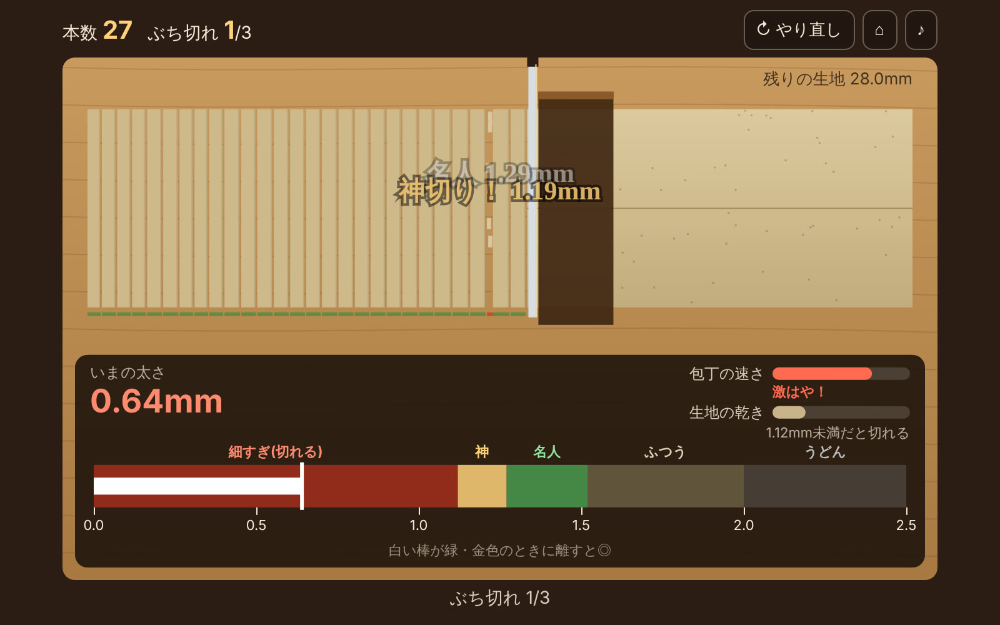

極細そば切り名人Ultra-Thin Soba MasterUltra-Thin Soba Master
ごくぼそそばきりめいじん／極細蕎麦切り名人／ソバ切り名人
江戸のそば職人は、約3cmの生地を23本に切ったといわれます。1本あたり約1.3mm。このゲームでは、その細さの限界に挑みます。Edo-era soba masters are said to have cut about 3 cm of dough into 23 strands — roughly 1.3 mm each. This game asks how close to the limit you can go.គេនិយាយថា ជាងធ្វើមី soba ក្នុងសម័យ Edo កាត់ម្សៅក្រាស់ប្រហែល 3 cm ជា 23 សរសៃ — ប្រហែល 1.3 mm ក្នុងមួយសរសៃ។ ហ្គេមនេះសួរថា តើអ្នកអាចទៅជិតដែនកំណត់នោះបានប៉ុណ្ណា។
遊び方How to playរបៀបលេង
- 画面を長押しすると包丁が動き、離すと切れるHold the screen to slide the knife, release to chopចុចសង្កត់អេក្រង់ ដើម្បីរំកិលកាំបិត ហើយលែងដើម្បីកាត់
- 太さゲージの緑か金色で離すと成功。金色は「神切り」Release in the green or gold zone of the gauge. Gold is a God Cutលែងនៅតំបន់ពណ៌បៃតង ឬពណ៌មាសនៃរង្វាស់។ ពណ៌មាសគឺ God Cut
- 1.0mm未満は「ぶち切れ」、2.0mmより太いと「うどん」で0本。ぶち切れ3回で終了Under 1.0 mm the noodle snaps; over 2.0 mm it counts as udon. Three snaps and you are outស្តើងជាង 1.0 mm មីនឹងដាច់ ក្រាស់ជាង 2.0 mm នឹងក្លាយជា udon។ ដាច់បីដង គឺចាញ់
見どころHighlightsចំណុចពិសេស
- 包丁の速さは揺れながら上がり、時間が経つと生地が乾いて切れやすくなるThe knife speeds up and wobbles, and the dough dries out over timeកាំបិតកាន់តែលឿន និងញ័រ ហើយម្សៅក៏ស្ងួតទៅតាមពេលវេលា
- 通常・タイムアタック30秒・一本勝負・ゴーストバトルの4モードFour modes: classic, 30-second time attack, one-shot and ghost raceរបៀបលេងបួន៖ ធម្មតា ប្រណាំងពេលវេលា 30 វិនាទី កាត់តែម្តង និងប្រណាំងជាមួយ Ghost
- 世界ランキングと23種類の称号（隠し称号あり）Global leaderboards and 23 titles, some of them hiddenចំណាត់ថ្នាក់ពិភពលោក និងងារ 23 ដែលខ្លះជាងារលាក់កំបាំង
- 友達に挑戦状リンクを送って、自分のゴーストと勝負してもらえるSend a friend a challenge link to race against your ghostផ្ញើតំណភ្ជាប់ប្រកួតទៅមិត្តភក្តិ ដើម្បីប្រណាំងជាមួយ Ghost របស់អ្នក
攻略のコツTipsគន្លឹះ
序盤は緑のゾーンで確実に本数を稼ぎ、余裕が出てきたら金色の「神切り」を狙うのがおすすめです。時間が経つと生地が乾いて切れやすくなるので、終盤ほど慎重に。ぶち切れは3回までなので、残り1回になったら無理をしないことが記録を伸ばすポイントです。Early on, bank strands safely in the green zone, then go for gold God Cuts once you have some breathing room. The dough dries and snaps more easily over time, so be more careful near the end. You only get three snaps, so when you are down to your last one, stop taking risks.នៅដំណាក់កាលដំបូង កាត់ឲ្យបានសរសៃដោយសុវត្ថិភាពនៅតំបន់បៃតង បន្ទាប់មកព្យាយាមយក God Cut ពណ៌មាស ពេលអ្នកមានឱកាស។ ម្សៅស្ងួត និងងាយដាច់ទៅតាមពេលវេលា ដូច្នេះត្រូវប្រុងប្រយ័ត្នជាងមុននៅជិតចុងបញ្ចប់។ អ្នកមានឱកាសដាច់តែបីដងប៉ុណ្ណោះ ដូច្នេះពេលនៅសល់ចុងក្រោយ កុំប្រថុយទៀត។
制作についてAbout the makingអំពីការបង្កើត
このゲームは、先輩のアイデアから生まれました。江戸のそば職人が約3cmの生地を23本に切ったという話をもとに、「どこまで細く切れるか」という職人の世界を、長押しして離すだけの操作に落とし込んでいます。細く切ろうと欲張るほどぶち切れ、慎重になりすぎるとうどんになる。そのギリギリの駆け引きが、何度も挑戦したくなるおもしろさにつながるよう、ゲージの幅や包丁の揺れ方を何度も調整しました。This game came from my senpai’s idea. Based on the story that Edo-era soba masters cut about 3 cm of dough into 23 strands, it turns the craftsman’s question of “how thin can you go?” into a simple hold-and-release control. Get greedy and the noodle snaps; play it too safe and it becomes udon. I tuned the gauge width and the knife’s wobble many times so that knife-edge tension keeps you coming back.ហ្គេមនេះកើតចេញពីគំនិតរបស់បងនៅសាលា (senpai) របស់ខ្ញុំ។ ផ្អែកលើរឿងដែលថា ជាងធ្វើមី soba ក្នុងសម័យ Edo កាត់ម្សៅក្រាស់ប្រហែល 3 cm ជា 23 សរសៃ វាប្រែក្លាយសំណួររបស់ជាងជំនាញ «តើអាចកាត់ស្តើងបានប៉ុណ្ណា?» ទៅជាការបញ្ជាសាមញ្ញ ចុចសង្កត់ហើយលែង។ លោភពេក មីនឹងដាច់ ប្រុងប្រយ័ត្នពេក វានឹងក្លាយជា udon។ ខ្ញុំបានកែសម្រួលទទឹងរង្វាស់ និងការញ័ររបស់កាំបិតជាច្រើនដង ដើម្បីឲ្យភាពតានតឹងនៅលើមុខកាំបិតនោះ ធ្វើឲ្យអ្នកចង់ត្រឡប់មកលេងម្តងទៀត។